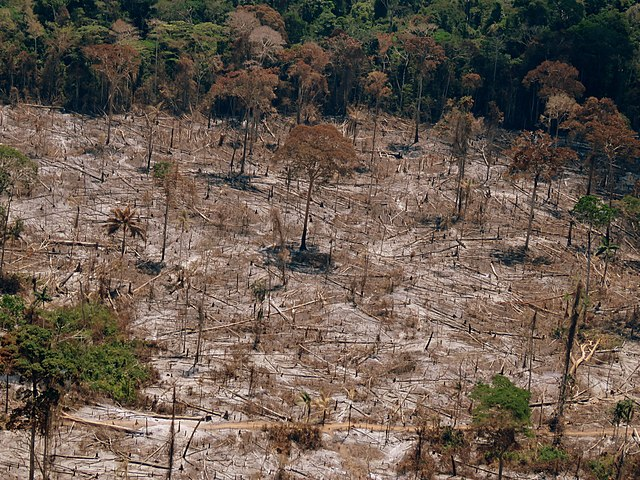

Lemur X Love
Our mission here at Lemur X Love is to protect the endangered populations of lemurs. We work with leading reaserchers from places like the Duke Lemur Center in North Carolina and the San Diego Zoo in California. Our efforts focus mainly on tracking the health of lemurs in the wild and educating the people who live near them.
Lemurs are primates indigenous to Madagascar. Scientists believe that millions of years ago a distant ancestor floated from the mainland of Africa to the island on a floating pice of vegetation. Once in Madagascar, the lemurs were free to evolve into all the different environments that the island had to offer. With no major predators, lemurs were free to fill all niches of the environment from deserts to rain forests.

Sadly, what was once a flourishing collection of species has dwindled to a small fraction of what they once were. The introduction of humans to Madagascar has been devistating to lemurs and their habitats. Most importantly, 97% of the islands forests have been destroyed, mainly due to bush fires used for clearing farmland. There were once lemurs the size of gorillas, but they were hunted to extinction and now the largest living lemur is the indri, a critically endangered species that reaches barley a meter in height. While it is illegal to hunt lemurs and locals have various toboos reguarding killing them, lemurs are still hunted for their meat and the growing human population continues to expand into the lemurs' diminishing forests.